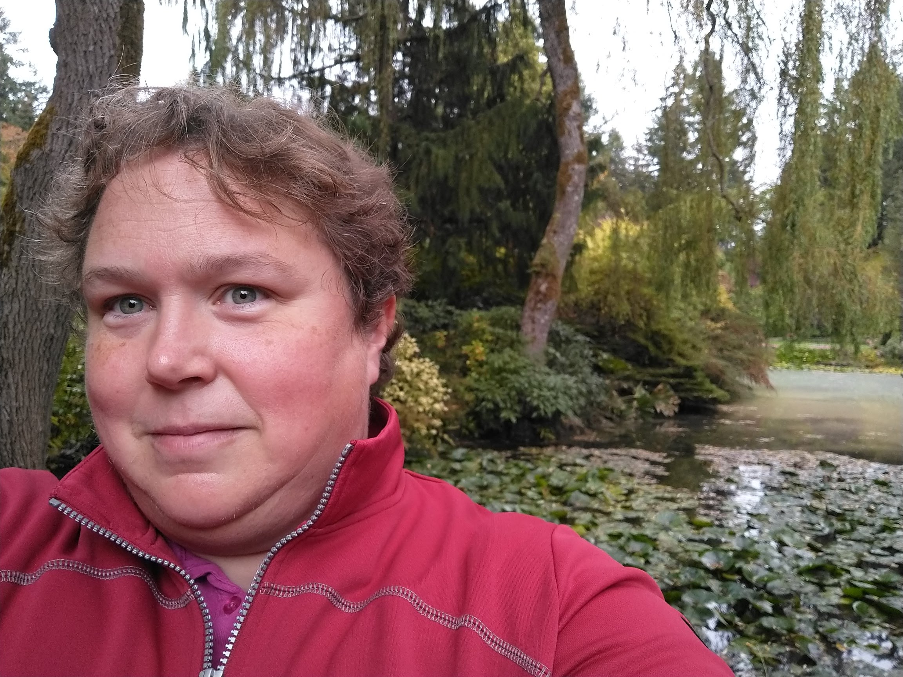

Lisa A. Dunham | WDD 130
My name is Lisa Dunham and I'm studying Family History through Pathways. I am also a geotechnical engineer by day, determining the type of foundation that buildings need to be secure and not move. This is the final time I will talk about this.